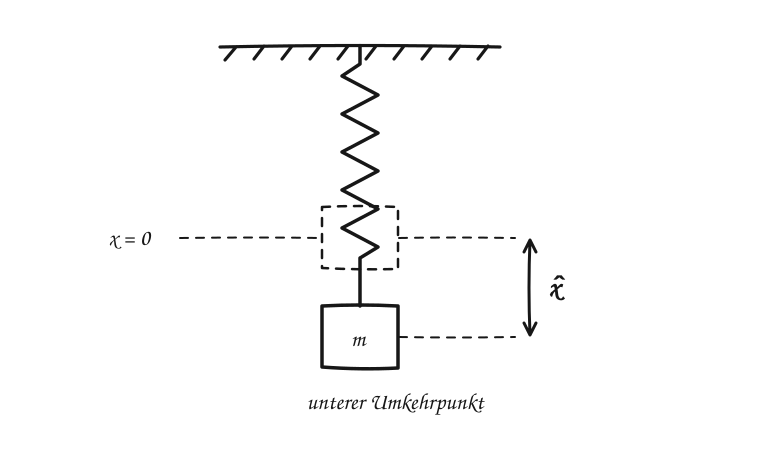
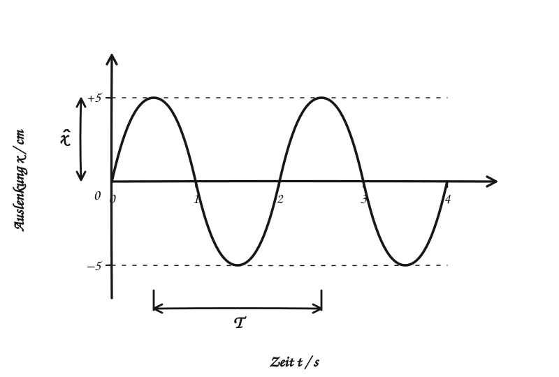

Schwingungen · Federpendel
Das Federpendel
Eine Masse an einer Feder schwingt um ihre Ruhelage.
Ziehst du die Masse etwas nach unten und lässt sie los, bewegt sie sich auf und ab. Wir messen ihre Auslenkung \(x\) von der Ruhelage aus. In unseren Skizzen ist die Richtung nach unten positiv. Die Diagramme zeigen Zentimeter; in Formeln mit \(D\) setzt du \(x\) in Metern ein.

Drei Größen für die Schwingung
Amplitude \(\hat{x}\): der größte Abstand von der Ruhelage. Schwingungsdauer \(T\): die Zeit für eine vollständige Bewegung zurück in dieselbe Lage mit derselben Bewegungsrichtung. Frequenz \(f\): die Zahl der Schwingungen pro Sekunde. Es gilt \(f=\frac{1}{T}\); ihre Einheit ist Hertz (Hz).

Zeitgesetz und Bewegungsgesetz
Beginnt die Messung in der Ruhelage und bewegt sich die Masse zuerst in positiver Richtung, gilt für eine ideale Schwingung ohne Reibung:
Das Zeitgesetz nennt die Auslenkung zu jedem Zeitpunkt. Die Geschwindigkeit beschreibt das Bewegungsgesetz:
Für das Federpendel gilt außerdem \(T=2\pi\sqrt{\frac{m}{D}}\). Dabei ist \(m\) die schwingende Masse und \(D\) die Federkonstante. Am Umkehrpunkt ist die Geschwindigkeit null; in der Ruhelage ist sie am größten.
Was hat das mit dem Hookeschen Gesetz zu tun?
Eine ideale Feder zieht umso stärker zurück, je weiter die Masse ausgelenkt ist. Bezogen auf die Ruhelage gilt für die resultierende Kraft \(F_{\mathrm{res}}=-D\,x\). Das Minuszeichen zeigt: Die Kraft wirkt der Auslenkung entgegen. Die Einheit von \(D\) ist \(\mathrm{N/m}\).
Beim senkrechten Pendel gleicht die Federkraft in der Ruhelage die Gewichtskraft aus. Deshalb beschreibt \(F_{\mathrm{res}}=-D\,x\) die Bewegung um genau diese Lage.
Wohin geht die Energie?
An den Umkehrpunkten steht die Masse kurz still: \(E_{\mathrm{kin}}=0\), während \(E_{\mathrm{pot}}\) maximal ist. In der Ruhelage ist die Masse am schnellsten; dort ist \(E_{\mathrm{kin}}\) maximal und \(E_{\mathrm{pot}}\) minimal. Beim vertikalen Aufbau gehören zur potenziellen Energie sowohl die gespannte Feder als auch die Lage der Masse im Schwerefeld.
Ohne Reibung bleibt \(E_{\mathrm{ges}}\) gleich. Mit Reibung wird ein Teil der mechanischen Energie in Wärme umgewandelt; die Amplitude nimmt ab.